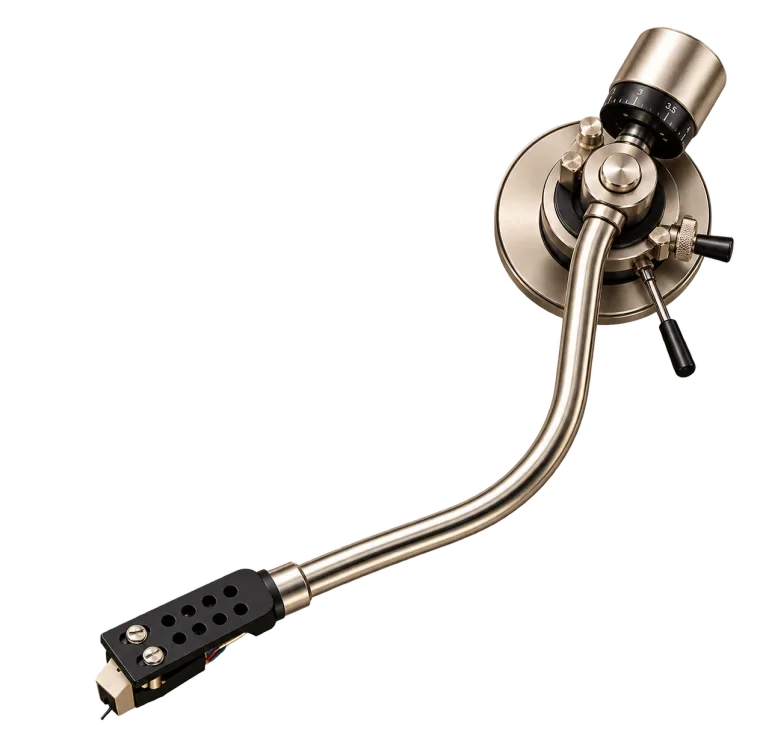

NAME BRAND RECORDS PRESENTS
Classic grooves. New possibilities.
A living catalog. A new generation of selectors.
The next chapter sounds like you.

THE COLLECTION / 12 STARTING POINTS
12 tracks. Your sound.
Choose a record to make it yours.
AFRICAN RHYTHMS · ONENESS OF JUJU · EXPANDED EDITION SELECTION

YOUR STARTING POINT
Track 01.
A record from Plunky’s catalog.
A new chapter with your perspective.
YOUR SOUND STARTS HERE
Pick your record.
Choose one of the 12 tracks before creating your DJ record.
Every record holds a story.

THE BACK COVER
African Rhythms.
Twelve starting points.
Oneness of Juju’s African Rhythms, expanded edition selection. Choose a track, bring your perspective, and help create the next chapter.
MORE THAN A MIX
Your selection.
A shared conversation.
Bring your perspective to Plunky’s music. Share your process, meet fellow selectors, and help shape what comes next.
Choose your starting track and develop your contribution.
Music, technique, and inspiration through Conversations with the DJ.
Weekly recognition: People’s Choice, Personal Selection, and Sponsor’s Favorite.